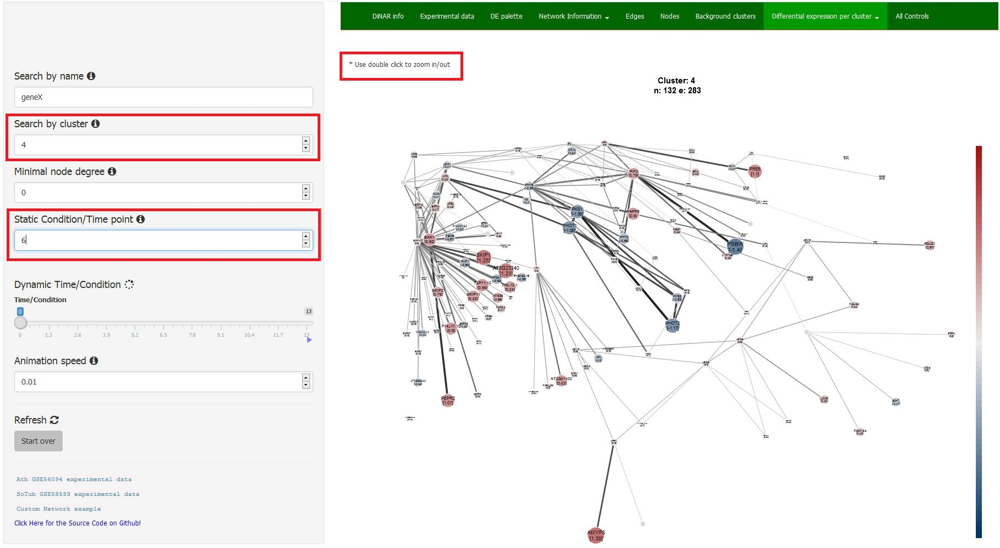

Visualisation of experimental data in background knowledge in particular cluster.
Static graph of selected cluster overlaid with experimental values per selected time-point/condition. One can easily browse through different data files by simply using scroll wheel or arrow keys. For ‘clearer’ view of few nodes in a cluster, select the area of interest and use double-click to zoom in.

Animation of selected cluster overlaid with experimental values for all consecutive conditions/time-points. Start the animation by using the Dynamic Visualisation Control slider.